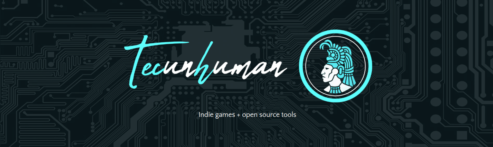
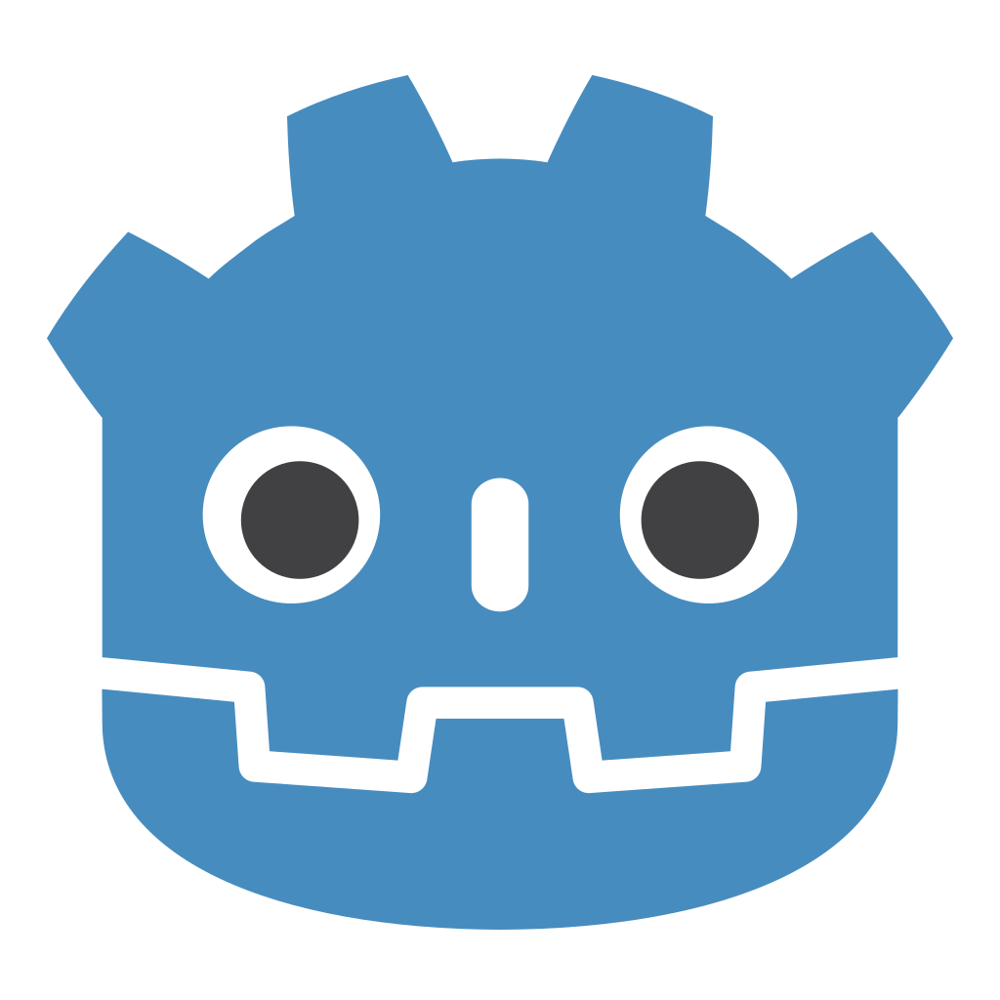
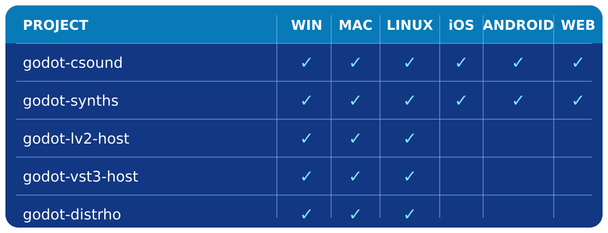
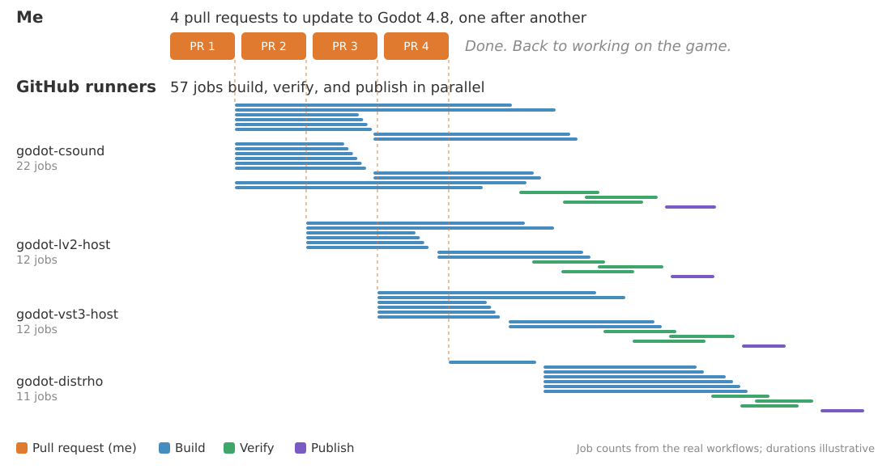
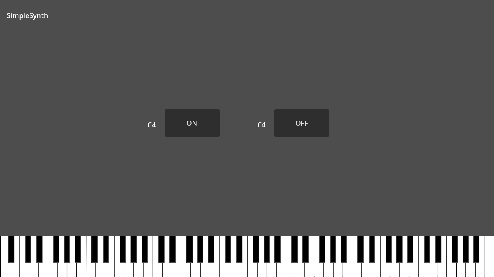
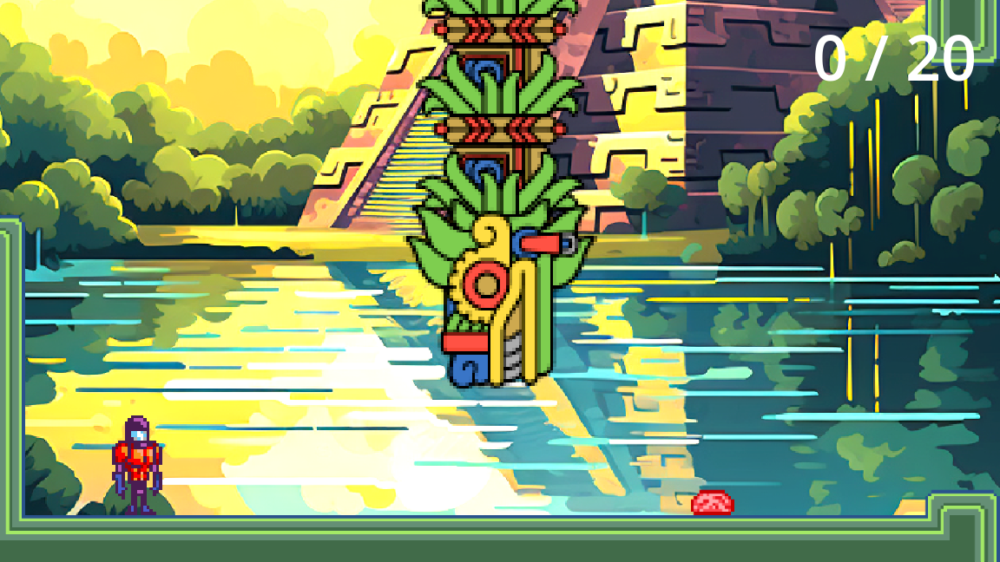
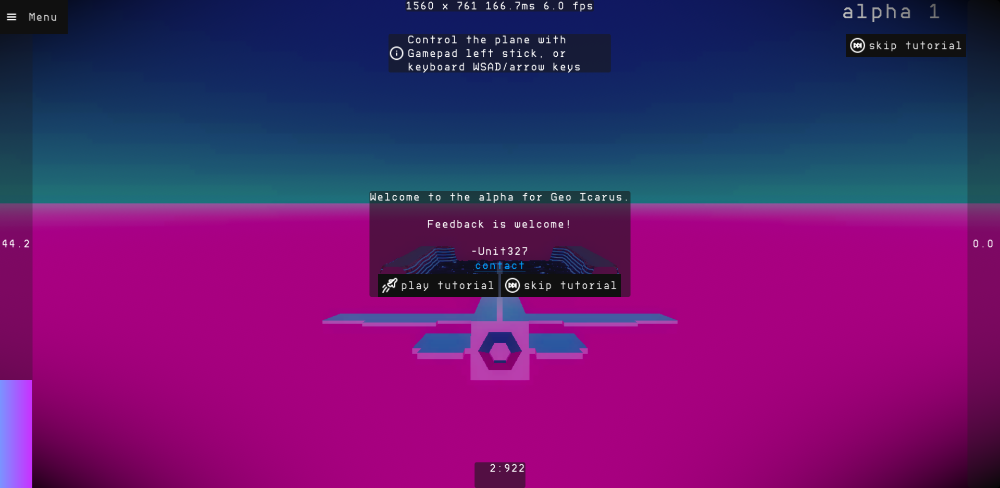
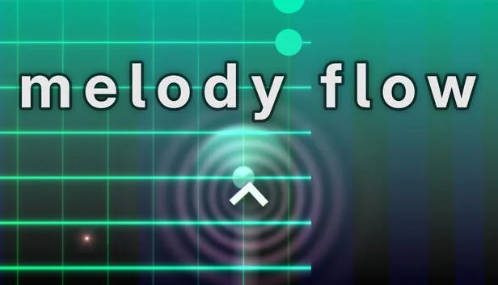
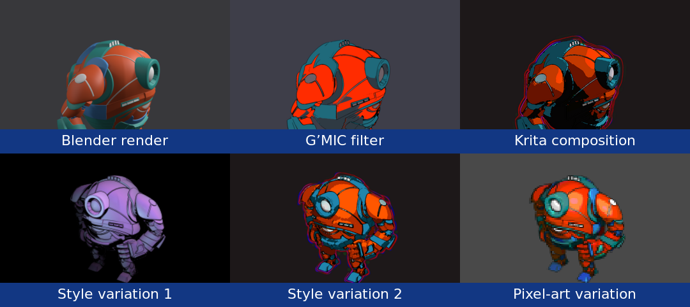
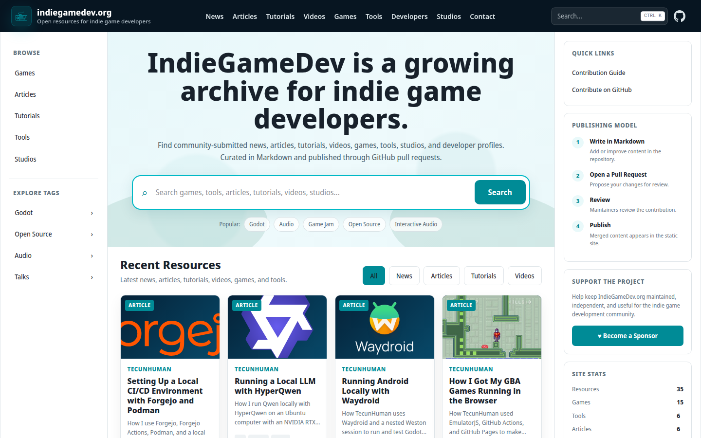

I'm a full-time indie game developer, software engineer, artist, and musician.
I've been a hobbyist indie game developer for over 20 years, and I have professional experience as a software engineer building and maintaining microservices at scale.
I created and maintain godot-csound, godot-lv2-host, godot-vst3-host, and godot-distrho. These are open-source projects for real-time audio synthesis, plugin hosting, and interactive audio in Godot.
I'm currently working on my first commercial game release.
How I built leverage as a solo developer, in three different ways:
This is the map for the talk. Most of the time goes to automation, because that is where most of my leverage came from. Integrating existing ecosystems is how the story starts, and moving up the stack is where it leads.
For the game I am building, I wanted music that could react to the player, the world, and the story. I did not begin with a complete architecture; I followed the problem one step at a time:
Once Godot could build plugins, it felt natural to host them too, and the idea of loading any plugin came up.
The music-production ecosystem already had thousands of mature synthesizers and effects. Instead of recreating them in Csound, I could make Godot host the plugins people already use. That led to:
The highest-leverage solution was not another instrument. It was a bridge to an ecosystem: every compatible plugin became an instrument or effect I could use instead of building myself.

Each library has its own build system, dependencies, and platform-specific problems. After solving the first integration, I could reuse the code, knowledge, and methodology, making each later project faster to build and support.
Working faster makes a task cheaper.
Automation makes it disappear.
Creating the automation took real upfront work. Today, a pull request starts a pipeline that builds, tests, packages, and publishes every supported target, with no human in the loop.
That time comes back on every release, on every project, for as long as the system runs. That is leverage: it keeps paying after you stop working.
Every supported combination must be configured, built, tested, packaged, and published. Repeating that manually across every project and platform would be impractical for one developer and difficult for a team to maintain. I applied practices I learned at large companies: reproducible environments, continuous integration, automated validation, and versioned releases.

Updating to Godot 4.8 meant one small pull request per project, done one after another. Each pull request starts the same workflows: 57 jobs across the four repositories build every platform, verify the extension in Godot, and publish the release, all in parallel. My part ends when the pull request is open.
For scale: the real Godot 4.7 update on July 4, 2026 used 15.7 hours of runner time across those 57 jobs.
The cycle compounds. Shared work becomes the foundation for the next person, project, or tool.
This is how I applied all three as one indie developer.
Large companies do not build products from scratch. They combine shared, proven layers, and I applied the same approach:
The advantage is not owning every layer. It is knowing what to reuse, what to standardize, and where custom work creates unique value.
At the large companies where I worked, teams combined operating systems, containers, languages, runtimes, libraries, databases, build tools, package systems, and testing, deployment, and monitoring tools. Because teams shared tools and methodologies, improvements to the stack created leverage across many people, services, and future projects.
My custom work is the layer that connects these systems to Godot, then builds, tests, packages, and releases that connection reliably. I did not need to recreate the engine, audio libraries, compilers, or automation platform.
Each step reduces the amount of knowledge and effort that must remain in one person's head.
The leverage is both reusable code and understanding. A large part of the build and release system carries into the next project, while experience helps me avoid solving the same problems again.
As the projects and platforms multiplied, the same work kept returning:
Every new project began with similar problems, and every manual process risked inconsistent results.
If work repeats or must be performed exactly, it is a candidate for automation.
These are the steps I used to do by hand for every library, platform, and release. Each one is a chance to forget something or get a slightly different result.
Before automating the work, define what the process needs:
A process must be understood before it can be automated reliably.
Writing the process down exposes missing steps, hidden assumptions, and work that only exists in one person's memory.
Replace instructions with commands that perform the work:
make ubuntu, make mingw, and make osxcross.Instead of remembering every step, I run one Make target. The scripts become reusable code and the source of truth for local and automated builds.
1 #!/bin/bash
2 # file: ./platform/ubuntu/build_release.sh
3
4 dir=$(realpath .)
5 src_dir=$dir/modules/csound
6 build_dir=$src_dir/build/linux/release
7
8 mkdir -p $build_dir
9 cd $build_dir
10
11 cmake -DCUSTOM_CMAKE=$src_dir/platform/linux/custom.cmake \
12 -DCMAKE_INSTALL_PREFIX:PATH=$dir/addons/csound/bin/linux/release \
13 -DCMAKE_BUILD_TYPE=Release \
14 $src_dir
15
16 make
17 make install
18
19 cd $dir
20 scons platform=linux target=template_release
Containers make the scripts independent of one development machine:
Same source + same script + same environment = reproducible build
1 # file: godot-build-containers/platform/ubuntu/Dockerfile
2 FROM registry.gitlab.steamos.cloud/steamrt/steamrt4/sdk AS base-image
3
4 RUN apt update -y && apt install -y build-essential \
5 cmake \
6 git \
7 python3 \
8 python3-pip \
9 zip \
10 curl \
11 unzip \
12 pkg-config \
13 autoconf \
14 libtool \
15 flex \
16 bison
17
18 FROM registry.gitlab.steamos.cloud/steamrt/steamrt4/sdk
19 COPY --from=base-image / /
20
21 # file: godot-csound/platform/ubuntu/Dockerfile
22 FROM ghcr.io/nonameentername/godot-ubuntu
1 # file: ./Makefile
2
3 all: ubuntu mingw osxcross
4
5 docker-ubuntu:
6 docker build -t godot-csound-ubuntu ./platform/ubuntu
7
8 shell-ubuntu: docker-ubuntu
9 docker run -it --rm -v ${CURDIR}:${CURDIR} -w ${CURDIR} godot-csound-ubuntu ${SHELL_COMMAND}
10
11 ubuntu: ubuntu-debug ubuntu-release
12
13 ubuntu-debug:
14 $(MAKE) shell-ubuntu SHELL_COMMAND='./platform/ubuntu/build_debug.sh'
15
16 ubuntu-release:
17 $(MAKE) shell-ubuntu SHELL_COMMAND='./platform/ubuntu/build_release.sh'
GitHub Actions becomes the operator of the reproducible process:
main starts the workflow.main creates a versioned archive and publishes a GitHub release.Local builds and CI use the same build logic. Automation changes when it runs, not how it runs.
1 # file: .github/workflows/builds.yml
2 jobs:
3 linux-build:
4 name: Linux/Ubuntu build
5 runs-on: ubuntu-latest
6 env:
7 VERSION: v1
8 steps:
9 - name: Build godot-csound (Release)
10 uses: nonameentername/docker-run-action@v3
11 with:
12 image: ghcr.io/nonameentername/godot-csound-ubuntu:${{ env.VERSION }}
13 options: >-
14 -v ${{ github.workspace }}:${{ github.workspace }}
15 --workdir ${{ github.workspace }}
16 run: |
17 ./platform/ubuntu/build_release.sh
1 # file: ./.github/workflows/builds.yml
2 jobs:
3 verify-linux-build:
4 name: Verify Linux/Ubuntu build
5 runs-on: ubuntu-latest
6 needs: linux-build
7 steps:
8 - name: Setup Godot
9 uses: chickensoft-games/setup-godot@v2
10 with:
11 version: 4.7.0
12 use-dotnet: false
13 include-templates: false
14
15 - name: Godot import
16 # First import registers the extension; assets can't load yet
17 continue-on-error: true
18 run: |
19 godot --headless --import
20
21 - name: Verify godot-csound
22 run: |
23 godot --headless -s csound_run_scene.gd --quit-after 300 2> /dev/null \
24 | grep 'output result is 4'
The TecunHuman workspace packages a GitHub-like development stack that I can run locally:
A new project can inherit source control, automated builds, runners, and development environments instead of assembling them again.
The development platform becomes reusable leverage.
Sharing means removing integration work for the next developer:
Developers can use Csound and existing audio plugins without repeating the engine integration or cross-platform build work.
Solve it once, share it, and it becomes leverage in someone else's stack.
godot-package is a lightweight GDScript dependency manager. Each project pins an exact GitHub release tag for every addon, then one headless command installs the same versions locally and in automation.
1 # file: quetzalcoatl/package.gd
2 extends "res://addons/godot-package/package.gd"
3
4 func _requirements():
5 dependency("nonameentername/godot-csound", {"tag": "v0.1.0-beta.188"})
6 dependency("nonameentername/godot-lv2-host", {"tag": "v0.1.0-beta.9"})
7 dependency("nonameentername/godot-vst3-host", {"tag": "v0.1.0-beta.10"})
Install dependencies:
1 godot --headless -s package.gd install
With the audio integration work completed, automated, and packaged, developers can build at a higher level. Tools like Cabbage turn Csound code into audio plugins. godot‑distrho lets Godot developers do the same with skills they have:
No C++, no plugin SDK, no compilers. Just Godot.

Key point: the CI pipelines from earlier build the plugin templates, so the plugin author never needs compilers or SDKs. The automation is what makes moving up the stack possible.
Demo: godot-distrho-example, the synth in the screenshot. Change the script, export, and load the plugin in a host.

Quetzalcoatl
Game jam entry
Dynamic audio in one week

Geo Icarus

Melody Flow
Introduce the games here; the demos follow. The dynamic music reacting to gameplay is the payoff for the problem from the start of the talk.
Quetzalcoatl was a one-week game jam entry. Dynamic audio fit into a jam schedule only because the integration, builds, and releases already existed. That is leverage compounding.
Plays 1:00–1:46 of the gameplay video. Point out the music reacting to the game: built in one week because the audio integration already existed.
Fallback link: https://www.youtube.com/watch?v=zt7ODFeZgnQ&t=60
Press play on the embedded trailer. Fallback link: https://www.youtube.com/watch?v=55_PRX7sZ94
Have the video open in a browser tab before the talk in case the venue network is slow.
The tools change, but the process remains: notice, describe, execute, reproduce, automate, and share.
This prototype is inspired by the Dead Cells 3D-to-2D workflow, adapted to use reusable Krita documents and Python scripts for composition and export:
One animated 3D asset > one consistent 30-frame 2D sequence
The same methodology applies anywhere work repeats. Procedural audio produces sounds and music from code, rules, and parameters; the same approach can generate art, levels, animation, and other game content. Reusable tools let your strongest skills compensate for limited time or weaker skills.

Large companies build shared internal platforms. Cloud and open-source communities extend this idea through reusable Terraform modules, Ansible collections, container images, and CI actions.
The indie game community can build its own shared stack in the same way.

indiegamedev.org is intended to become an open archive connecting the work and knowledge of indie game developers: games and reusable tools, articles, tutorials, and videos, and developer and studio profiles.
Today, the archive contains only my own contributions. I am building the structure and contribution workflow first (Markdown, pull request, review, publish) so other developers and studios can add their work later.
Sharing code creates leverage. Sharing the knowledge and community around it makes that leverage easier to find and use.